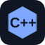
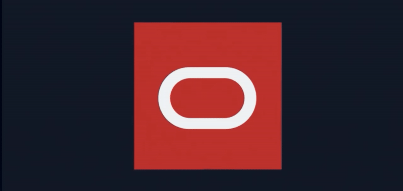
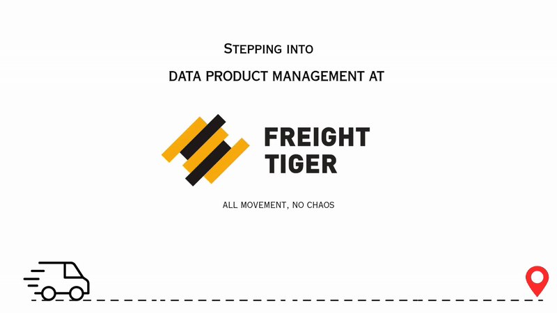
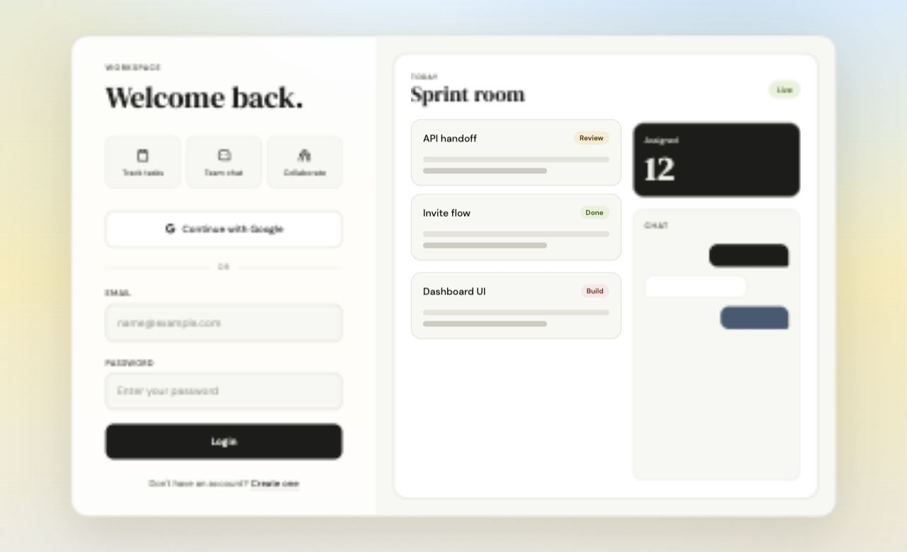

Back to roles
Focused portfolio 01
Software Developer
Backend APIs, React product surfaces, orchestration workflows, AI agents, test automation, and solutions that need clear controls around reliability, security, and developer speed.
Scroll sections: Skills -> Experience -> Projects -> Certificates.
currentOracle Intelligent Communication Orchestration intern
agent workGenAI + MCP security gateway
qualityPlaywright + Cypress regression coverage
SDE skills
Labeled stack map for full-stack, orchestration, testing, and GenAI work.
Java
Python

C++ JavaScript TypeScript React Node.js REST APIs SQL Databases Redis Kafka Docker Oracle OIC Testing GenAI MCP RAGInternship experience
Production internships, separated from projects for clarity.

Jan 2026
Present
Oracle Intelligent Communication Orchestration
SDE intern work across GenAI-assisted OpenAPI authoring, React service-configuration flows, and UI regression reliability.
01
Designed a GenAI agent for OpenAPI spec authoring across orchestration service endpoints.
02
Built reusable React customer input flows with conditional SKU and service logic.
03
Expanded Playwright and Cypress coverage for safer distributed UI releases.

Jun 2025
Aug 2025
Freight Tiger
Backend internship work around onboarding API speed, idempotent service calls, Kafka reliability, and reporting visibility.
01
Reduced bulk-upload onboarding API response time by 40% with a focused lookup path.
02
Implemented idempotency keys across service endpoints to prevent duplicate transactions.
03
Fixed Kafka data-loss failures and built PostgreSQL-backed KPI reporting.
SDE projects
Project work focused on product solutions and developer tooling.

MCP Security Gateway
AgentGuard
Runtime policy checks, tool risk scoring, approval flows, and audit-backed MCP tool execution.
Repository Click repository to inspect build details.
Project Management Platform
OneForAll
Jira-style team workspace with auth, tickets, chat, Redis-backed JWT blacklist, and Groq summaries.
Live deployment Click live deployment to open the product.SDE certificates
Proof for software, testing, GenAI, and product analytics.

Oracle Certified
Oracle Cloud Infrastructure 2025 AI Foundations Associate
Oracle Cloud Infrastructure AI Foundations credential covering cloud AI concepts, GenAI fundamentals, and Oracle AI services.
Open certificate
Coursera / Packt
Playwright Python and Pytest for Web Automation Testing
Browser automation testing, pytest workflows, and UI validation practice.
Open certificate
Udemy
Microsoft Power BI Desktop for Business Intelligence
Business intelligence dashboards, data modeling, reporting, and analytics workflows.
Open certificate
LinkedIn Learning
End-to-End JavaScript Testing with Cypress.io
End-to-end JavaScript testing workflows for reliable product UI validation.
Open certificate
Udemy
Complete Generative AI Course With Langchain and Huggingface
LangChain, Hugging Face, GenAI application workflows, and production-oriented AI patterns.
Open certificate